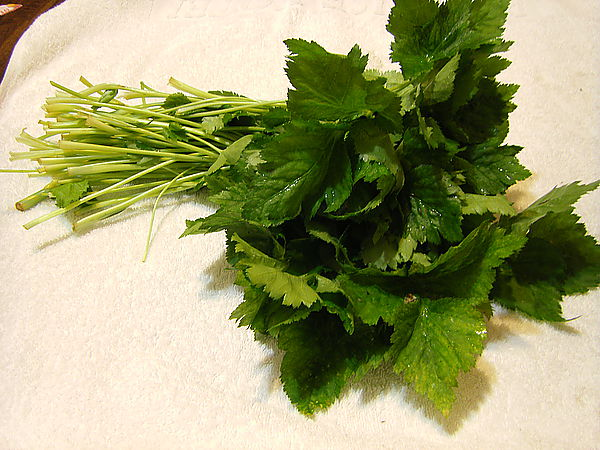

城市農夫料理
醜豆
因外貌的偏見，而被稱為「醜豆(臺語)」的「菜豆」，因吃起來有嚼勁，具粉嫩口感，鮮甜可口，也被稱為「粉豆」。
種植方式
- 選豆種：選擇顆粒飽滿的豆種。
- 泡水：將豆種泡水一晚。
- 直播：直接埋入土裡2公分深，平均分散豆種的位置。
- 立支柱：豆蔓已伸長超過30公分時，要趕快立支柱讓它攀爬。
- 摘心：生長至5～6片葉時施行摘心，讓側枝長出更多的新芽，就會有更多的開花與結果。
- 施肥：每週施一次液態有機氮肥，淋灑於全株，每個月施用一次有機肥。
- 採收：大約1個月就可以陸續採收，至少連續3個月。
醜豆醬炒杏鮑菇
食材
作法
- 將醜豆切段、杏鮑菇切絲、紅蘿蔔切成細絲。
- 熱油鍋，將所有食材一同入鍋，翻炒片刻，直至杏鮑菇出水。
- 倒入些許醬油來提味，在一同翻炒片刻後，即可起鍋盛盤。
山芹菜
山芹菜又名鴨兒芹，因為葉片形狀像鴨掌，所以才有這個名稱，這款野菜有特殊香氣、富纖維、含維生素A、C及鐵質，口感香脆且甜。

種植方式
- 劃溝：先劃出寬約1公分的淺溝數條，視要栽種的數量而定，行距可抓3公分左右。
- 播種：抓取泡過水的種子，在淺溝中以點播的方式播種，株距約3公分。
- 保持土壤潮濕：播種後覆蓋1公分以內的薄土層，以噴霧型澆水器澆透表土，避免種子跑位或流失；且在種子發芽前，都要隨時保持土壤潮濕。
- 施肥：每隔10～15天施加一次。
山芹菜炒肉絲
食材
- 山芹菜一把
- 肩夾肉半斤
- 蠔油少許
- 醬油少許
- 鹽巴少許
- 香油少許
作法
- 肩夾肉切絲，用蠔油、醬油醃10分鐘入味。
- 山芹菜洗淨，切斷，根葉盡量分離。
- 起油鍋，快炒肉絲至8分熟後取出備用。
- 同鍋利用剩下的油快炒山芹菜根部，下少許鹽巴。 炒山芹菜根至半軟後，肉絲及山芹菜葉下鍋，快炒1分鐘，滴入少許香油，起鍋。
BACK